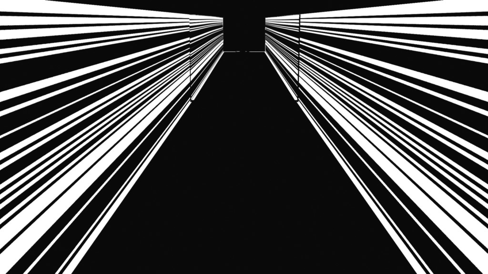
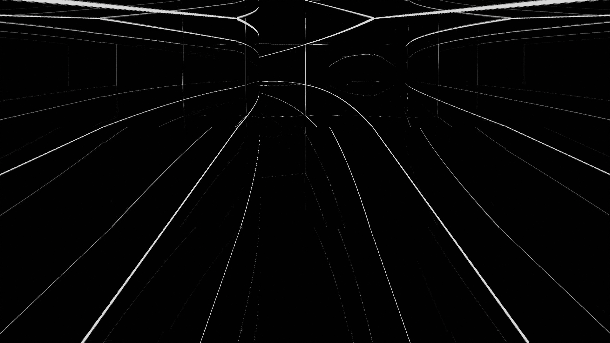

- Tunnel
- 2019-07
-
- Diese Komposition befasst sich mit Projection Mapping mittels eines visuell-auditiven Ansatzes. In einem Raum (einem Tunnel) versucht sie, anhand hell scheinender Konturen, Partikeln und binauralem Ton die Wahrnehmung des Betrachters zu überlisten.
- This composition explores projection mapping through a visual and auditory approach. It aims to trick the viewers perception of a space (a tunnel) by using nothing but bright-lit contours, particles, and binaural sound.
-
- Einkanaliges Video, 30 Sek.
- 1-channel video, 30"
- http://splitlevel-udk.de
- Anna Anders, Gabi Schillig, Ruven Wiegert (2020). Splitlevel – Kunstraum Potsdamer Straße. Berlin: Verlag der Universität der Künste. ISBN 978-3-89462-346-3.
-
-

